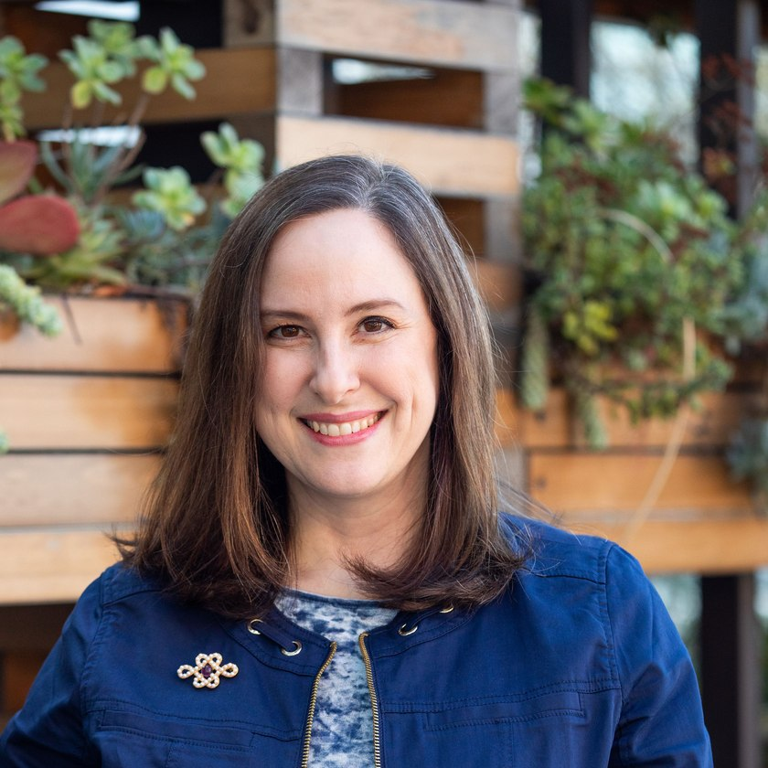

Writer · Communications Leader
Complex ideas,
made clear.
I'm Director of Research and Innovation Communications at Adobe, where I tell the story of AI breakthroughs at the cutting edge of computer science. I'm also co-author of Beyond Stoicism. I created The Stoic Mom in 2016 and have written it ever since.
Adobe
Director, Research and Innovation Communications. I built the program from the ground up and lead a communications team that partners with researchers across generative and agentic AI, LLMs, and computer vision.
About my work → AuthorBeyond Stoicism
With Massimo Pigliucci and Gregory Lopez. Published in the UK as Live Like a Philosopher.
The books → CoachingCo-Active Coaching
Certified as a CPCC and an ACC, with an approach rooted in Stoic principles and personal leadership.
Work with me →About
Bio

I work at the intersection of AI innovation, strategy, and technology storytelling. At Adobe, I lead research and innovation communications — a program I built from the ground up. I lead a communications team that partners with researchers across a world-class lab — generative and agentic AI, LLMs, computer vision, video, audio, and 3D — to tell the story of their work.
Much of that work is strategy rather than communications in the traditional sense: building systems that carry research breakthroughs into executive alignment, product influence, and public impact. I joined as Adobe Research's founding science writer and have been promoted five times in eight years — growing the lab's social reach by more than 700%, directing executive messaging that helped secure multi-million-dollar funding for the generative AI roadmap, and running a program that moved research into Firefly, Photoshop, Lightroom, Premiere Pro, and Acrobat.
Before Adobe, I worked as a journalist and communications strategist covering technology and research. My writing has appeared in Newsweek, The Industry Standard, the San Francisco Chronicle, Stanford Magazine, and the Stanford Report. At Stanford, my work supported major interdisciplinary research initiatives and philanthropic investments of more than $10 million.
Alongside this work, I write and speak on ethics and practical philosophy. I created The Stoic Mom blog in 2016 and have written it continuously since — on Substack since 2022. I'm co-author of Beyond Stoicism with Massimo Pigliucci and Gregory Lopez, published in 2025 and now out in Spanish, with a Chinese edition on the way. I also host The Philosopher's Compass podcast and work as a certified executive coach.
- Books
- Beyond Stoicism (2025) · Live Like a Philosopher, UK edition · Words That Carry Us
- Podcast
- The Philosopher's Compass, host
- Writing
- The Stoic Mom, creator and author since 2016 — on Substack since 2022
- Previously
- Stanford University · Journalist and communications strategist covering technology and research
- Education
- Harvard University, A.B. History & Literature, summa cum laude, Phi Beta Kappa · Stanford University, M.A. History · École Normale Supérieure, Paris
- Affiliations
- Adobe · Centre for the Study and Application of Stoicism, Royal Holloway · National Association of Science Writers
- Credentials
- Certified Professional Co-Active Coach (CPCC) · Associate Certified Coach (ACC)
How can people navigate complexity with greater creativity, humanity, and critical thinking? The question behind all of it — research, AI, leadership, coaching, philosophy
Writing
Selected work
Translating frontier AI research for general readers — and writing on applying ancient philosophy to modern life.
Adobe Research posts are written with the research teams and published without individual bylines.
AI & computer science
- CVPR 2026: Adobe Researchers Present 75+ Papers on the Frontier of AI
- Teaching an AI Agent to Retouch Photos: RetouchIQ at CVPR 2026
- MotionStream Demonstrates Real-Time Control in AI Video Creation
- TeamFusion: Using AI Agents to Represent Every Voice in Team Decisions
- When the Music Fits: VidTune Helps Video Creators Find the Right Soundtrack
Philosophy & the good life
Newsletter
The Stoic Mom
Because we could all use a little wisdom.
I started The Stoic Mom in October 2016, when my daughters were ten and eight and I was losing to Silicon Valley's parenting culture — the extracurriculars, the comparison, the conviction that any misstep of mine would cost my kids their futures.
What changed things was an essay by Massimo Pigliucci arguing that Stoicism wasn't a museum piece but something you could actually use. I've been writing about it ever since — first at thestoicmom.com, and on Substack since 2022, where I've published more than fifty posts.
Much of that writing pushes back on what's been made of this philosophy online: the “broicism” of cold self-reliance and extreme self-sufficiency, and the $toicism that sells ancient virtue as a productivity hack. Neither is true to the philosophy. Both are worth arguing with — and what's actually there is far more useful to a parent and a person than either.
Listen
The Philosopher's Compass
My podcast, for anyone seeking philosophical inspiration, guidance, and direction. New episodes appear here automatically.
Contact
Get in touch
For speaking, press, coaching inquiries, or just to say hello.
Prefer email? Write to meredith.kunz@pm.me.